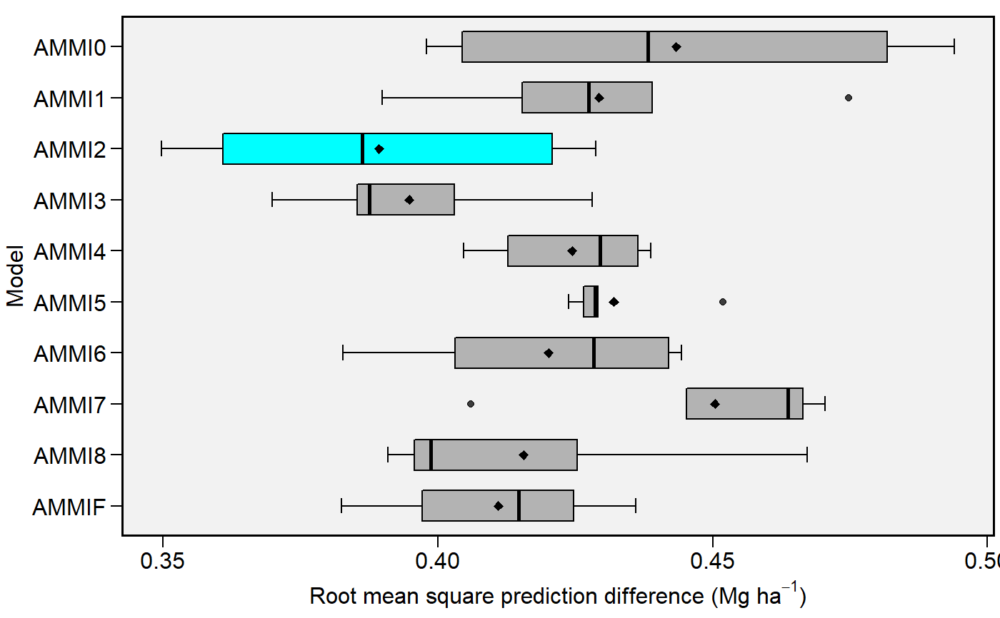

Boxplot showing the Root Means Square Prediction Difference of of a cross validation procedure.
Usage
# S3 method for cvalidation
plot(
x,
violin = FALSE,
export = FALSE,
order_box = FALSE,
x.lab = NULL,
y.lab = NULL,
size.tex.lab = 12,
file.type = "pdf",
file.name = NULL,
plot_theme = theme_metan(),
width = 6,
height = 6,
resolution = 300,
col.violin = "gray90",
col.boxplot = "gray70",
col.boxplot.win = "cyan",
width.boxplot = 0.6,
x.lim = NULL,
x.breaks = waiver(),
...
)Arguments
- x
An object of class
cvalidationfitted with the functionscv_ammi(),cv_ammif(),cv_blup(), or a bound object fitted withbind_cv().- violin
Define if a violin plot is used with boxplot. Default is 'TRUE'
- export
Export (or not) the plot. Default is
T.- order_box
Logical argument. If
TRUEthen the boxplots will be ordered according to the values of the RMSPD.- x.lab
The label of x-axis. New arguments can be inserted as
x.lab = 'my x label'.- y.lab
The label of y-axis. New arguments can be inserted as
y.lab = 'my y label'.- size.tex.lab
The size of the text in axis text and labels.
- file.type
The type of file to be exported. Default is
pdf, Graphic can also be exported in*.tiffformat by declaringfile.type = 'tiff'.- file.name
The name of the file for exportation, default is
NULL, i.e. the files are automatically named.- plot_theme
The graphical theme of the plot. Default is
plot_theme = theme_metan(). For more details,seeggplot2::theme().- width
The width 'inch' of the plot. Default is
6.- height
The height 'inch' of the plot. Default is
6.- resolution
The resolution of the plot. Parameter valid if
file.type = 'tiff'is used. Default is300(300 dpi)- col.violin
Parameter valid if
violin = T. Define the color of the violin plot. Default is 'gray90.- col.boxplot
Define the color for boxplot. Default is 'gray70'.
- col.boxplot.win
Define the color for boxplot of the best model. Default is 'cyan'.
- width.boxplot
The width of boxplots. Default is
0.2.- x.lim
The range of x-axis. Default is
NULL(maximum and minimum values of the data set). New arguments can be inserted asx.lim = c(x.min, x.max).- x.breaks
The breaks to be plotted in the x-axis. Default is
authomatic breaks. New arguments can be inserted asx.breaks = c(breaks)- ...
Currently not used.
Details
Five statistics are shown in this type of plot. The lower and upper hinges correspond to the first and third quartiles (the 25th and 75th percentiles). The upper whisker extends from the hinge to the largest value no further than 1.5 * IQR from the hinge (where IQR is the inter-quartile range). The lower whisker extends from the hinge to the smallest value at most 1.5 * IQR of the hinge. Data beyond the end of the whiskers are considered outlying points.
Author
Tiago Olivoto tiagoolivoto@gmail.com
Examples
# \donttest{
validation <- cv_ammif(data_ge2,
resp = EH,
gen = GEN,
env = ENV,
rep = REP,
nboot = 5)
#> 1 of 5 sets using AMMIF |== | 5% 00:00:00
2 of 5 sets using AMMIF |==== | 10% 00:00:00
3 of 5 sets using AMMIF |====== | 15% 00:00:00
4 of 5 sets using AMMIF |======== | 20% 00:00:00
5 of 5 sets using AMMIF |========== | 25% 00:00:01
1 of 5 sets using AMMI2 |============ | 30% 00:00:01
2 of 5 sets using AMMI2 |============== | 35% 00:00:01
3 of 5 sets using AMMI2 |================ | 40% 00:00:01
4 of 5 sets using AMMI2 |================== | 45% 00:00:01
5 of 5 sets using AMMI2 |==================== | 50% 00:00:02
1 of 5 sets using AMMI1 |====================== | 55% 00:00:02
2 of 5 sets using AMMI1 |======================== | 60% 00:00:02
3 of 5 sets using AMMI1 |========================== | 65% 00:00:02
4 of 5 sets using AMMI1 |============================ | 70% 00:00:02
5 of 5 sets using AMMI1 |============================== | 75% 00:00:03
1 of 5 sets using AMMI0 |================================ | 80% 00:00:03
2 of 5 sets using AMMI0 |================================== | 85% 00:00:03
3 of 5 sets using AMMI0 |==================================== | 90% 00:00:03
4 of 5 sets using AMMI0 |====================================== | 95% 00:00:04
5 of 5 sets using AMMI0 |========================================| 100% 00:00:04
plot(validation)

# }